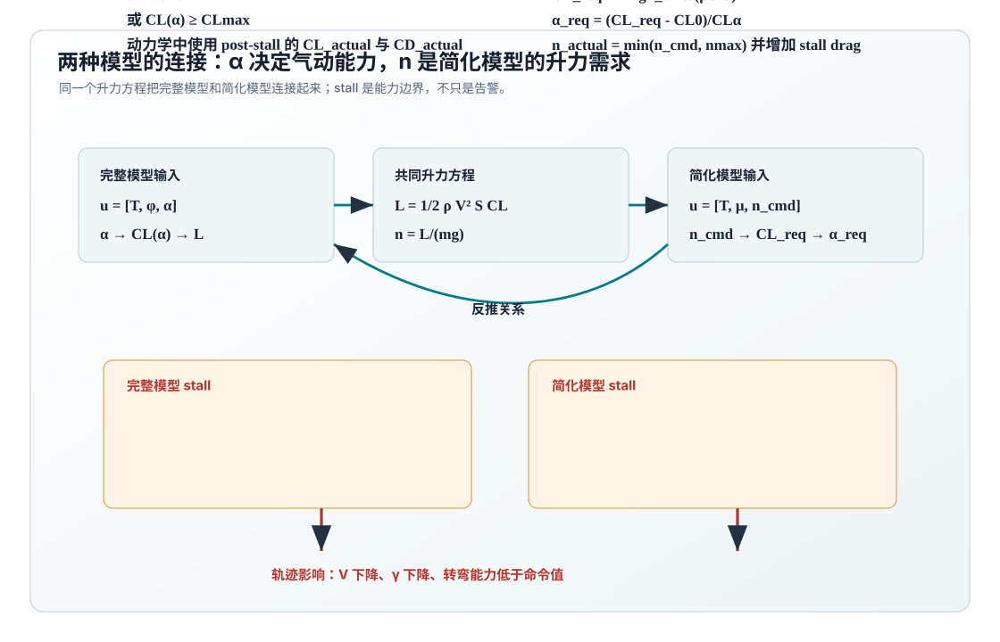

完整模型：输入 T, φ, α
完整模型把攻角作为控制输入，通过 \(C_L(\alpha)\)、\(C_D(\alpha)\) 计算升力 \(L\) 和阻力 \(D\)。 这使 stall 可以直接由 \(\alpha \ge \alpha_{\mathrm{crit}}\) 定义。
本文档基于 three_dof_flight_dynamics_models_explained_cn.md，
将三自由度模型拆成两个子页面：一个保留攻角 \(\alpha\) 和空气动力计算，
一个保留当前轨迹仿真常用的 \(T,\mu,n\) 简化控制形式。
完整模型把攻角作为控制输入，通过 \(C_L(\alpha)\)、\(C_D(\alpha)\) 计算升力 \(L\) 和阻力 \(D\)。 这使 stall 可以直接由 \(\alpha \ge \alpha_{\mathrm{crit}}\) 定义。
简化模型直接命令载荷因子 \(n\)，等价于要求 \(L=nmg\)。 stall 不是由输入 \(\alpha\) 触发，而是由所需 \(C_{L,\mathrm{req}}\) 或反推 \(\alpha_{\mathrm{req}}\) 超限触发。

../generate_three_dof_model_diagrams.py 生成。
两个模型并不是互相独立：它们通过 \(L=\frac12\rho V^2SC_L\) 和 \(n=L/(mg)\) 连接。
两个模型都使用三自由度点质量状态：
| 变量 | 含义 | 在方程中的作用 |
|---|---|---|
| \(X,Y,h\) | 位置和高度 | 由速度 \(V\)、航向 \(\psi\)、飞行路径角 \(\gamma\) 积分得到 |
| \(V\) | 速度大小 | 由沿速度方向的力决定 |
| \(\psi\) | 航向角 | 由水平转弯方向的法向力决定 |
| \(\gamma\) | 飞行路径角 | 由竖直平面内的法向力和重力分量决定 |
| \(m\) | 质量 | 完整模型可加入燃油消耗；短时仿真常令 \(\dot m=0\) |
在 3-DOF 点质量模型中，bank angle 不是相对地面 \(X/Y/h\) 轴直接量出来的角， 而是绕速度轴 \(e_V\) 旋转法向力方向的角。零度方向是 \(e_\gamma\)：它垂直于速度， 并位于速度轴和当地竖直轴构成的竖直平面内。
所以 \(\cos\mu\) 项进入 \(\dot\gamma\)，\(\sin\mu\) 项进入 \(\dot\psi\)。 若把航向角改成航空常用的从 North 顺时针增大的 heading \(\chi\)，正负号需要随角度定义重新核对。
如果目标是解释空气动力学来源，先读 完整模型的 \(L,D\) 计算。 如果目标是理解当前 trajectory simulator 为什么用 \(n\)，直接读 简化模型如何反推 \(\alpha_{\mathrm{req}}\)。 两处都放了互相跳转链接。
两个子页面现在都按同一条路线推导微分方程：先从速度矢量得到 \(\dot X,\dot Y,\dot h\)，再把外力分解到切向、水平转弯方向和竖直法向方向， 最后用牛顿第二定律得到 \(\dot V,\dot\psi,\dot\gamma\)。
| 推导对象 | 完整 alpha 模型 | 简化 n 模型 |
|---|---|---|
| 位置方程 | 速度按 \(\gamma,\psi\) 分解 | 同一几何分解 |
| 速度大小 | \(T\cos\alpha-D-mg\sin\gamma\) | \(T-D-mg\sin\gamma\) |
| 航向角 | \((L+T\sin\alpha)\sin\phi\) | \(nmg\sin\mu\) |
| 飞行路径角 | \((L+T\sin\alpha)\cos\phi-mg\cos\gamma\) | \(nmg\cos\mu-mg\cos\gamma\) |